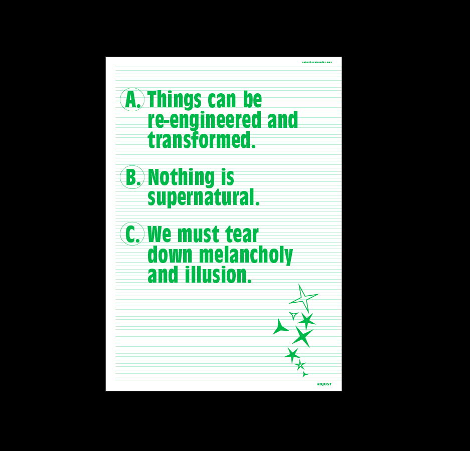
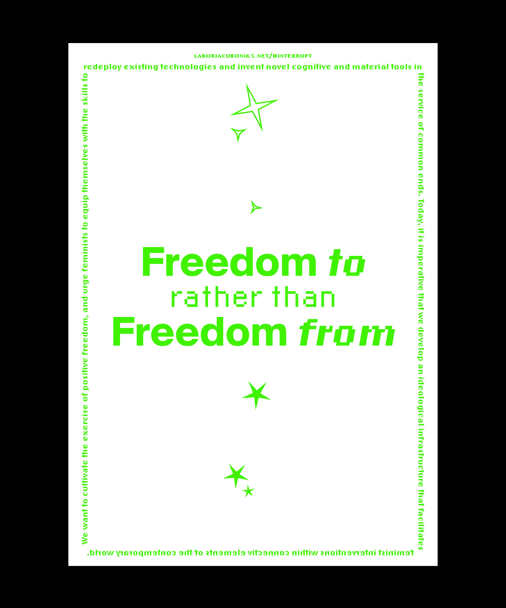
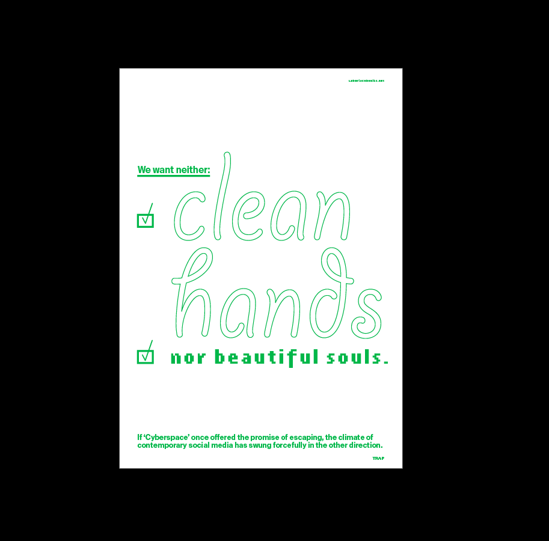
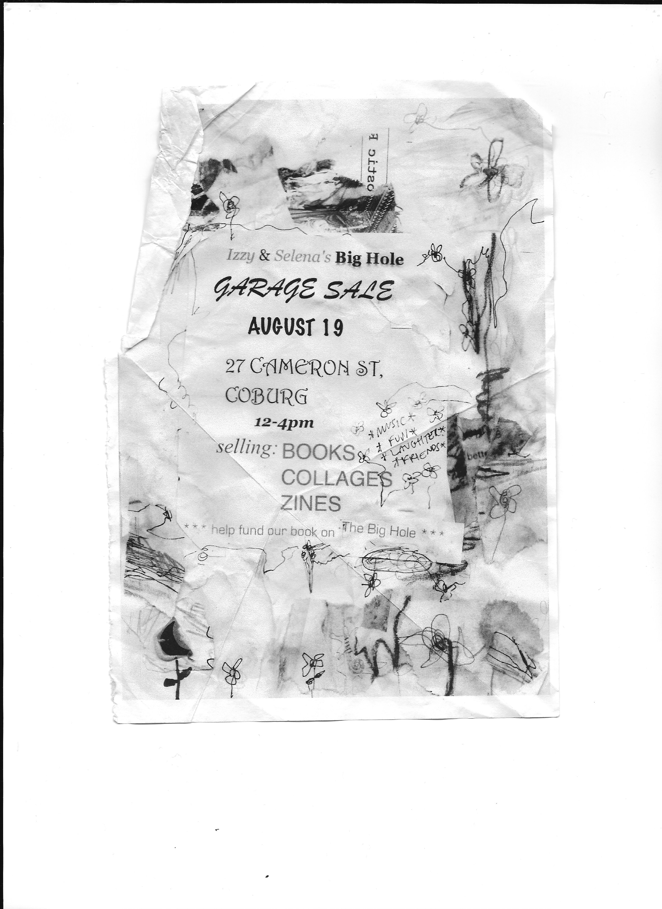
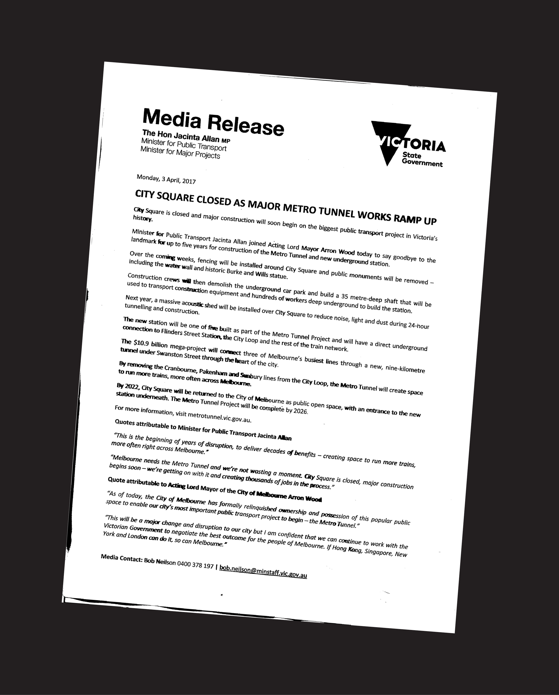
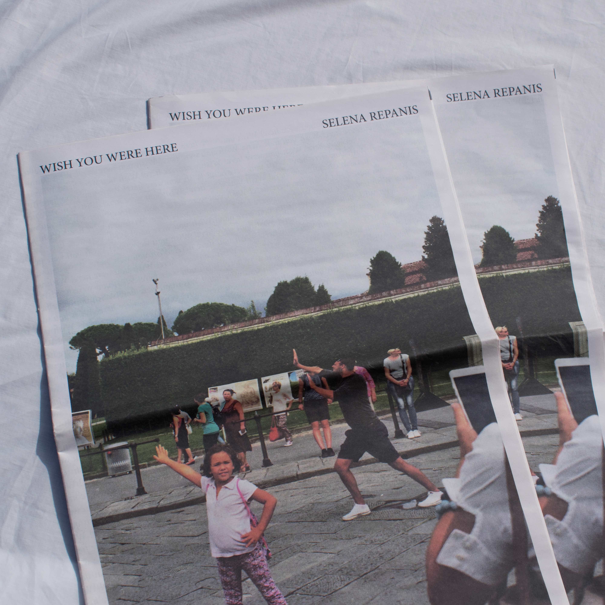
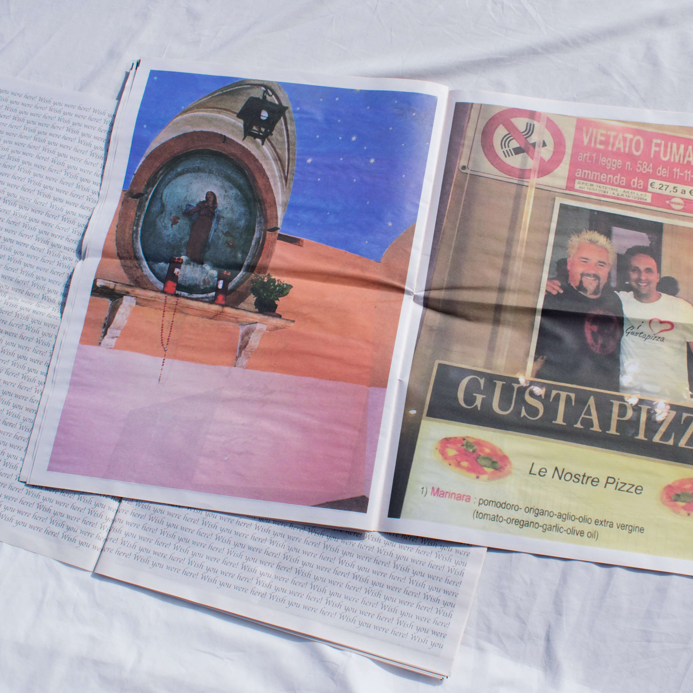
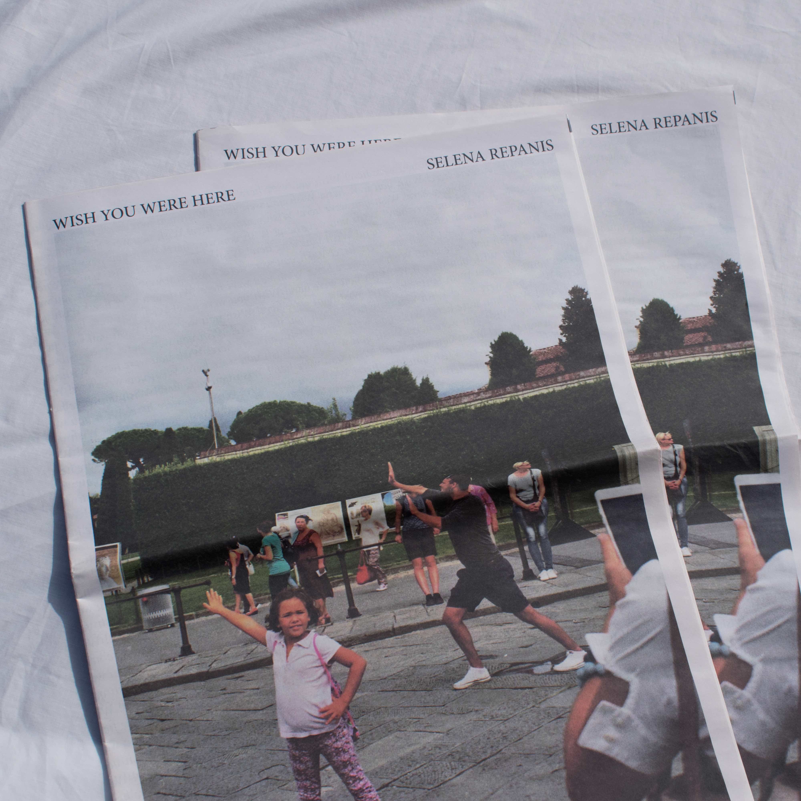
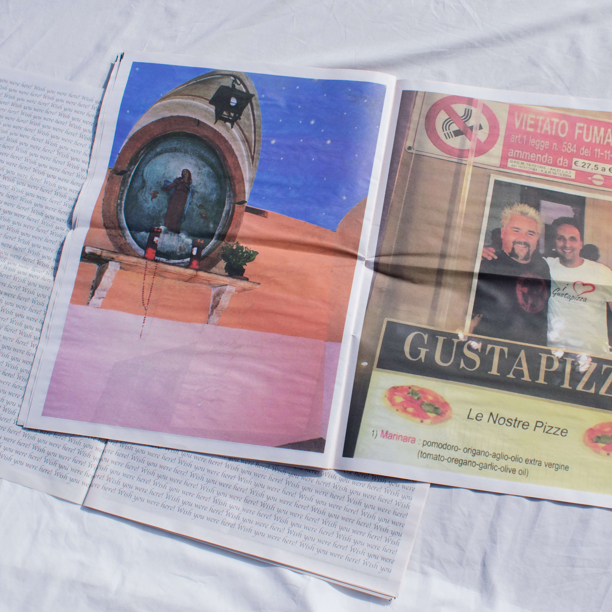

XF Posters
A series of 7 posters unpacking Laboria Cuboniks' Xenofeminist Manifesto. SRA3 series of 7 individual posters, full manifesto on back. Risograph printed by General Enquiry.



Fauxvenir
Fauxvenir is a series of false souvenirs that allow time-poor tourists to pretend they have visited a place they never had time to see. The items were given out for free to passersbys in Florence, and documented in a video here. This was a collaborative project between myself, James Meadowcroft, Leitu Bonnici and Lakshan Dharmapriya during a semester in Monash University, Prato.


The Big Hole
The Big Hole is an experimental project designed by myself and edited by Izzy Hardisty. Our first publication aims to document and respond to "The Big Hole", the site formerly City Square. Since April 2017, the site has been closed off to the public, as construction of the new Town Hall Station, part of the Metro Tunnel, takes place. Publication coming in November 2018.


Wish You Were Here!
A publication showcasing photographs taken in Italy 2017, highlighting a contrast between the "Bello e Brutto". Wish You Were Here! is a mix of my own iPhone photography and 35mm film photography, and was printed as a broadsheet newspaper.
 



My name is Selena Repanis.
I live and work in Narrm/Melbourne, AUS,
& I study Design at Monash University.
If you'd like, you should email me!
E: selenarepanis@gmail.com